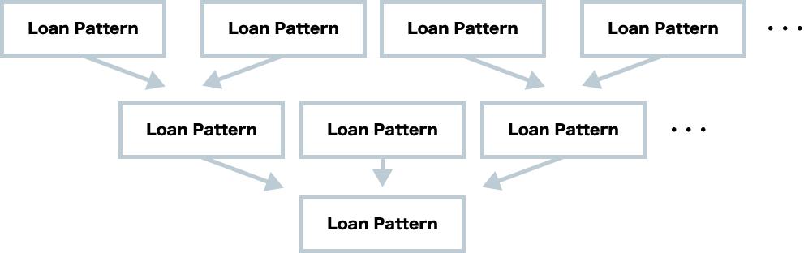
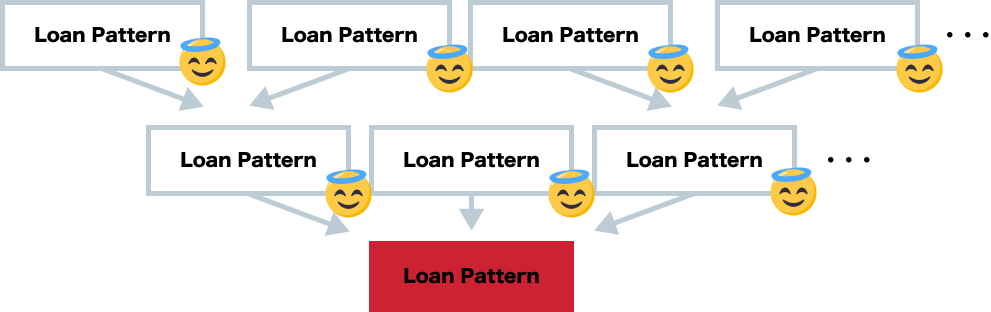

Scalaによる
サービス開発現場での継続的
リファクタリングの実践
株式会社ビズリーチ
岩松竜也

岩松竜也
株式会社ビズリーチ HRMOS事業部
2015年4月 新卒入社
入社以来 HRMOS事業部でATS※開発に携わる
入社以前はC#で医療システムのアルバイトなど
最近よく「わかまつ」と間違えられます。😡


 とは
とは
人が活躍する未来は、企業が人を活用する未来。
「HRMOS（ハーモス）」は、企業の人事を可視化し、
戦略人事を実現するソリューション。
AI（人工知能）が人材活用の最適化をサポートし、
企業の成長に貢献します。
採用管理とは
HRテック（HR × Technology）で
採用を強くする
HRMOS採用管理は、業務をシンプルにし、
日々のオペレーションからあなたを解放します。
採用活動のデータを可視化・分析し、
戦略的な人材獲得を実現します。
今日話す事
リリースからそろそろ1年
おかげさまでお客様も増え、事業として急速に拡大できた。
技術的なひずみも大きくなった
ビジネス都合の開発が優先される中、どうやってリファクタリングに取り組んできたか
-
Scala素人がリファクタリングできるようになるまで
-
どうやってリファクタリングを進めたか
-
リファクタリングの結果と現在
参考文献
Chris Birchall 「レガシーソフトウェア改善ガイド」(翔泳社, 2016)
リファクタリング当時に参考にしていたわけではないが、ためになる話が多かったので
こんなことありませんか？
参入したプロジェクトのコードが汚すぎる。
ストレスがたまるのでついカッとなってリファクタリングしてやった。
イメージです
そんなことはなかった
Scalaが全然わかっていませんでした。

ぜんぜん
わからない
俺たちは
雰囲気で
Scalaを書いている
こんなことしました

Scalaスケーラブルプログラミング第3版 ¥4,600
読書会
-
意地でも継続する。ちゃんとやりきる。
-
分からないところをリストアップ・質問する
-
コードサンプルは全てさわる
こんなことしました

一緒にやってた同期の発表が詳しい
車輪の再発明をしてみる
-
HTTPサーバをつくってみた
-
Qiita, StackOverflow禁止、RFC、既存実装のみ参照可能
-
気付いたら弊社の新卒研修になってた
こんなことしました

アウトプットも忘れずに
OSSのコードを読んでみる
-
Playframework, Scalaz, Slick, etc...
-
git cloneしてないと師匠に怒られる
-
アウトプットのため、さらに読む
I can develop by Scala a little
-
読書会
インプット
-
車輪の再発明をしてみる
実践
-
OSSのコードを読んでみる
応用
繰り返し取り組む
ワタシハ スカラ チョットデキル（多分）
そんな感じでScalaをやってみたい方
We are Hiring!!
プラチナスポンサーだし許してね！
あれあれ？このプロジェクトもしかして…
だんだんScalaが書けるようになってくる
プロジェクトのコードをよく見る
もしかしてやばい！？
( ◠‿◠ )☛気づいてしまったか・・・
HRMOSのやばいところ
-
「どう書く」が統一されていない
-
レイヤー責務が各々の理解に委ねられている
-
似たような役割のコードが多い or 過剰な共通化
「どう書く」が統一されていない
レイヤー責務が各々の理解に委ねられている
HRMOSのレイヤーわけ概要 (実態)
-
Controller
- フレームワーク関係の処理
- ビジネスロジック
-
Service
- ビジネスロジック
-
Repository
- 永続層の操作
- ビジネスロジック
ビジネスロジック
ビジネスロジック
過剰な共通化
ローンパターンの多用
ローンパターンの例(自動的にCloseさせたい場合など)
過剰な共通化
ローン同士が依存しまくる(ローン地獄)
大本のローンに変更が入ると…
過剰な共通化
ローン同士が依存しまくる(ローン地獄)
全体に影響が・・・
似たような役割のコードが多い
問題は色々あった
何から手をつけるか
気に食わないやつから衝動的に倒していませんか？
Scalaに慣れてきたある日・・・
ぼく「この部分イケてないな…直したろ！」
ぼく「こう書けばイケてるんじゃね！？」
師匠「君は視座が低いね〜😊😊😊」
何のためにやるのか考えよう
"誰があなたに給料を払っているのか忘れてはいけない。リファクタリングは、それがビジネスに長期的な価値をもたらすすと、あなたが証明できるときにだけ行うべきだ"
Chris Birchall 「レガシーソフトウェア改善ガイド」(翔泳社, 2016)
こうなってしまっていませんか？
"「書き方がヘタなコードを見るのが我慢できない」というのだが、「書き方がヘタなコード」の定義は、「誰か他のやつが書いたコード」と、ほとんど同じであることが多い"
"コードベース全体から見ると比較的マイナーな隅っこの荒れ地ではないだろうか。"
Chris Birchall 「レガシーソフトウェア改善ガイド」(翔泳社, 2016)
確かに 😐
クリティカルパスを探そう
原因を考えてみる
-
「どう書く」が統一されていない
-
プロジェクト全体を書き換える工数が取りづらい
動いている以上、修正の優先度が上がりにくい
ルールがない
クリティカルパスを探そう
原因を考えてみる
-
レイヤー責務が各々の理解に委ねられている
-
新規メンバーがどんどん増え、色々な思想が混じる
意思統一の手間が省かれがち
ルールがない
クリティカルパスを探そう
原因を考えてみる
-
似たような役割のコードが多い or 過剰な共通化
-
ドキュメントがない・参照しづらい
Scala自体に不慣れメンバーも入ってくる
ルールがない
ルールがない
まったくの0というわけでもない
-
体制が頻繁にアップデートされる
-
一月ごとに結構人が増える
-
決まり事が陳腐化しやすい
原因はわかった
モジュール化すると…
3つの向上！
-
品質の向上
モジュール単位ではコード量も減るため、
-
保守容易性の向上
関心の分離を促進し、処理がひとつひとつ分かりやすくなる。他のモジュールとのインターフェイスさえ保証できれば変更が容易になる。
-
自立性の向上
機能追加やモジュールごとに別々の技術スタック
モジュール化するためには
これを・・・
-
Controller
- フレームワーク関係の処理
- ビジネスロジック
-
Service
- ビジネスロジック
-
Repository
- 永続層の操作
- ビジネスロジック
ビジネスロジック
ビジネスロジック
モジュール化するためには
こうして・・・
-
Controller
- フレームワーク関係の処理
-
Service
- ビジネスロジック
- ビジネスロジック
- ビジネスロジック
-
ビジネスロジック
-
ビジネスロジック
-
Repository
- 永続層の操作
モジュール化するためには
こうじゃ！！！
-
Controller
モジュールA
Controller
モジュールB
Controller
モジュールC
-
Service
- ビジネスロジック
- ビジネスロジック
- ビジネスロジック
ビジネスロジック
ビジネスロジック
-
Repository
- 永続層の操作
インターフェースの統一
Eitherを上手に使う！
Eitherとは
2通りの型を持つことができる型
Eitherとは
Javaで書くとだいたいこんな感じ
public class Main {
public static void main(String[] args) {
Either either1 = new Left<>(1);
Either either2 = new Right<>("hoge");
Either either3;
if (true) {
either3 = new Left<>(1);
} else {
either3 = new Right<>("hoge");
}
}
}
abstract class Either {}
class Left extends Either {
public L value;
public Left(L value) {
this.value = value;
}
}
class Right extends Either {
public R value;
public Right(R value) {
this.value = value;
}
}
Eitherとは
何が嬉しいの？
ユーザ定義のエラーと返り値を両立できる
エラーが起こる事も含め、すべて型で表せる
メソッドの返り値をすべてEitherで統一できる※
バイバイException！！
EitherT
こちらでEitherTの解説もしています。
もしくはZ神の記事を御覧ください。
実際にはEitherTを使用
実際にはFuture, DBIO※などの要素も入ってくるが
各インターフェイスをいい感じに統一する事ができる
利用イメージ
リファクタリングの要点
-
ビジネスロジックを整理
-
EitherT化して
インターフェースを整理
モジュール化
様々なリファクタリングを展開
開発効率も向上！事業成長に貢献！！
EitherT化のPros
独立性が高い
API単位の修正であるため、他の修正とバッティングしづらい。※
合間に作業しやすい
作業単位が小さいので何かのついでや手の空いたときにやりやすい
EitherT化のCons
品質を担保する仕組みがない 😱
各APIをリファクタリング後、挙動が変わっていない事を保証する仕組みがない※
作業量が多い 😇
全てのロジックを整理し、同じインターフェースにするのはかなり大変
品質を担保する仕組みがない 😱
Solution: API自動テストを用意する
Chrisさんもそう言ってた※1
API Blueprint, Dreddの導入※2
API自動テスト、APIドキュメントが揃えられAPI挙動の変化を最低限検知できるようになる
API自動テストの様子
後輩は時事ネタに飛びついてしまいました
作業量が多い 😇
Solution: チームメンバーの手を借りる
-
合意形成
いわゆる根回し
事前に主要なメンバーと雑談し「これは良くない、こうなると良いよね」という認識を合わせた -
お手本の準備
一通りリファクタリングしたお手本を予め用意
全員がそれを参考にできるようにした -
説明会の実施
全員に対しリファクタリングの目的と理由、進め方を共有
「がんばるぞい」的な空気感を醸成
実際にやってみた
結果
半年ほど立ったが未完了 😱
未完了な原因
-
APIドキュメント作成コスト
ツールとして発展途上、用途が微妙に合わない、記述が大変、単純に時間がかかる
といった理由から使いづらさが目立ってしまった(詳細は後輩の資料で) -
旗持ち役が忙しくなってしまった
リファクタリングを推進できなくなってしまった 🙇🙇🙇
-
組織改編の波に飲まれた
チーム体制やタスクの進め方が改革され「リファクタリングってやっていいんだっけ？」となってしまい、
あまり進められなくなってしまった
改善点
-
事前調査の強化
実際の運用でぶつかりそうな問題をちゃんと確認すべきだった
-
旗持ち役を冗長化
同じようなモチベーションで周りを鼓舞できる人を用意すべきだった
-
短期決戦にする もしくは 公式なタスクとする
環境の変化に負ける前に一気に畳み掛けるか、プロダクトオーナーやマネージャーとしっかり相談すべきだった
やって良かった事
-
ルールが明確になり、認識をすり合わせられた
当時参加していたメンバー間では。。メンバーが増え続けるため、継続する必要はあった
-
コードの問題に気づけたという声
メンバーからはリファクタリングをして初めて先述した問題に気づけたという声も聞くことができた
現在では
さらに組織が拡大！カオスな状況！
改善しやすい体制へ
-
アーキテクチャが参入！
チームや開発体制の改革、プロダクト改善を責任を持って進めていただけるように 🙏
ゴリゴリと物事を進める事の大事さを学ぶ -
チームごとの権限強化
ドメイン※ごとにチームを分割
自治権を強化しリファクタリングしやすくなった 💪
俺たちの戦いはこれからだ！
まとめ
-
Scalaはいいぞ 🙄
言語機能を使う事でルールをうまく作る事が可能
機能を変に使うと負債も生み出してしまうので注意 -
クリティカルポイントを探そう
そのリファクタリングは「何のために」「どれだけの良い効果をもたらすのか」考えよう
-
チームメンバーに頼ろう
一人でできる事には限りがある
メンバーと良い関係、認識を揃えつつ物事を進めよう